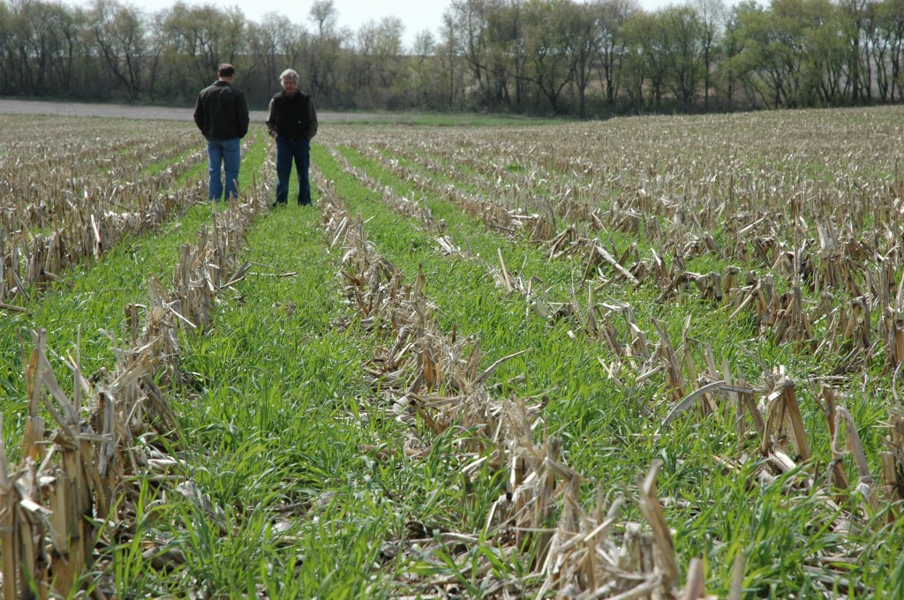

Dick Sloan is a member of the Sustainable Corn Project advisory board, chairman of the Lime Creek Watershed Council and a Practical Farmers of Iowa Outreach Leader.
Sustainable Corn Project advisory board member, Dick Sloan, and Iowa State University Agronomy professor, Matt Liebman, will present Extending the Rotation Beyond Corn and Beans as part of the Practical Farmers of Iowa Fall Farminar Series Tuesday, November 25, starting at 7 p.m. CST. Click HERE for direct access to the archived Farminar program.
Dick started planting a rye cover crop in 2011 to improve his Soil Conditioning Index following soybeans and in two years made a commitment to planting multi-species nitrogen scavenging cover crops on all of his 720 rotated crop acres. To diversify his cropping system and ensure availability of winter small grains, Dick planted 13 acres of rye for harvest in 2013 and expanded to 20 acres in 2014. This Fall he planted 10 acres of winter wheat in addition to the 20 acres of rye for harvest in 2015. This will provide Dick with the majority of his cover crop seed, provide an alternative to his corn/corn/soybean rotation, reduce costs by growing legumes after small grain harvest, increasing sustainability and resilience.
Matt Liebman, and his research group at Iowa State University, has been conducting long-term research comparing two-, three- and four-year crop rotations. His recent work shows that extended crop rotations can lead to a reduced reliance on herbicides, pesticides and artificial fertilizer, and less use of fossil fuels. A Leopold Center On the Ground Video by Matt provides some insight into the topic he will be discussing on Tuesday evening.
This Farminar will be a great opportunity to gain some insight from a farmer and researcher about the opportunities and obstacles to adding a third crop to the typical corn and soybean rotation. Dick and Matt are both enthusiastic about extending and improving cropping systems to improve economic and environmental performance.


{kind=link}
{kind=link}
{kind=link}
{kind=link}